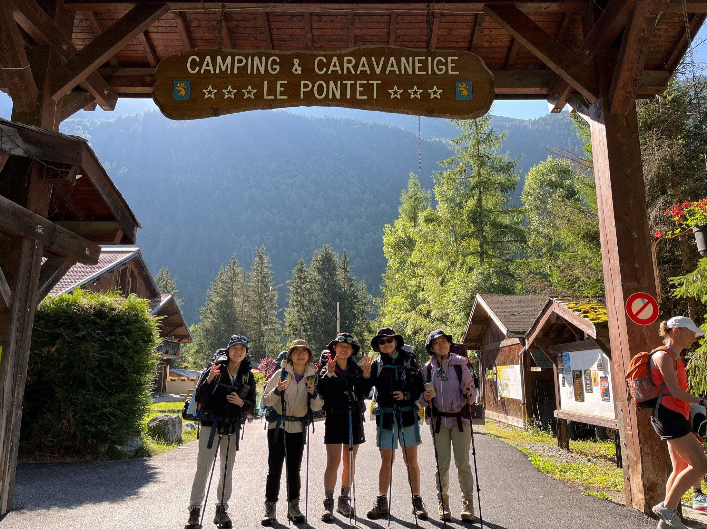
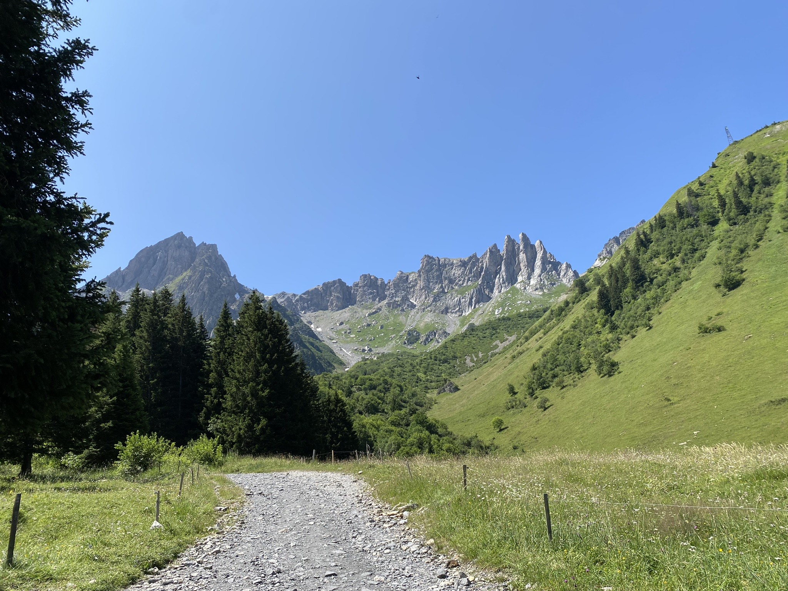
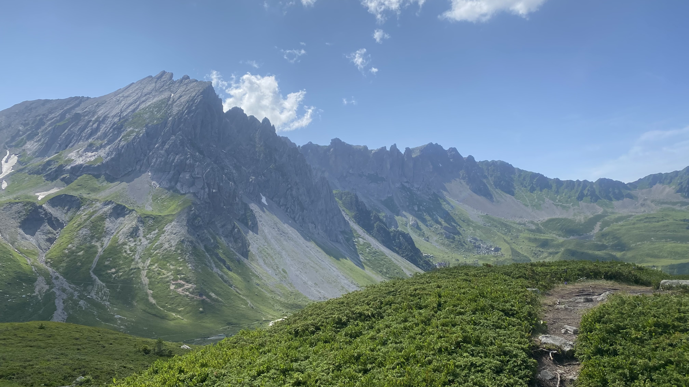
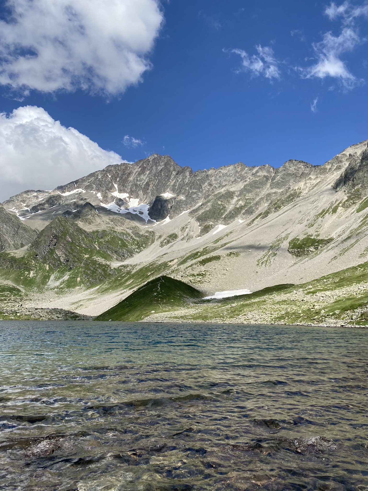
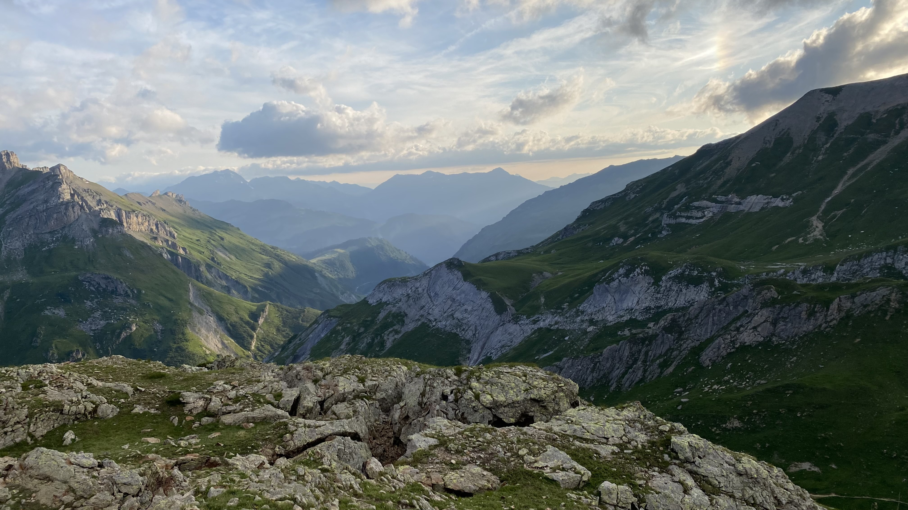

- TMB란?
- 코스 소개
- 일별 코스
TMB 2일차





Les Contamines에서 Bonhomme 산장
거리: 16km, 상승고도: 1,305m
루트
- Pontet 캠핑장에서 노틀담 예배당으로 이동
- 노틀담 예배당에서 낭보랑 산장으로 이동(화장실 이용 불가)
- 낭보랑 산장에서 발머 산장으로 이동
- 발머 산장에서 점심 식사
- 조베호수 갈림길로 이동 후 짐 놓고 조베호수 등산
- 조베호수 갈림길로 돌아온 후 본옴므 고개로 이동
- 본 옴므 고개에서 본 옴므 산장으로 이동
숙식
- 아침식사: 전날 Les Contamines 마트에서 장 본 걸로 해먹음(빵, 파스타면, 요거트, 계란 등)
- 점심식사: 발머 산장에서 오믈렛, 샐러드, 치즈 등 - 5인 73유로
- 저녁식사: 라면
- 숙박: 본 옴므 산장 앞에서 야영
비용
- 식비
- 전날 장 본걸로 아침식사: day1에 포함
- 발머 산장 점심식사: 14.6유로
- 라면 저녁식사: 0유로
- 숙박
본 옴므 산장 앞에서 야영: 0유로
- 총 비용: 14.6유로